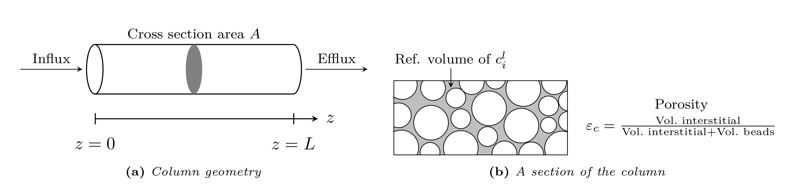
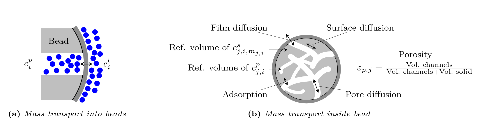
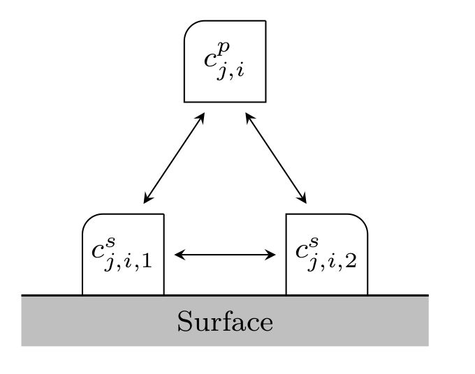
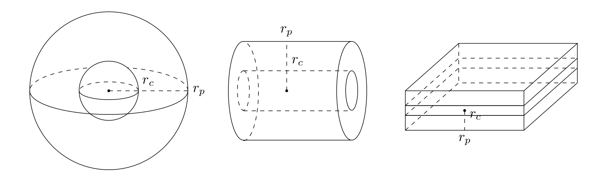
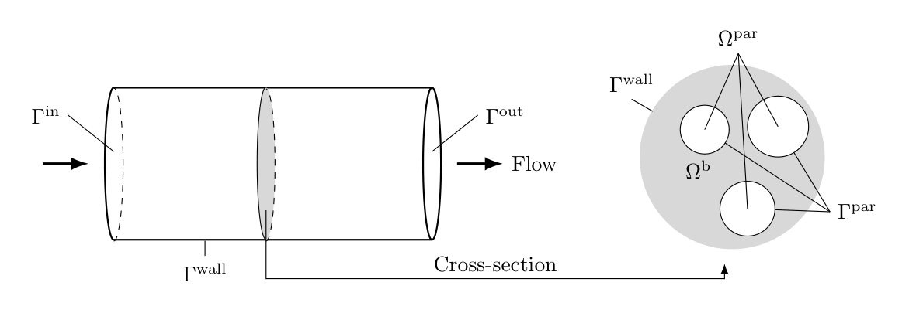
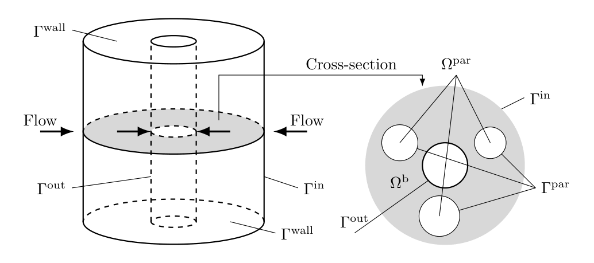
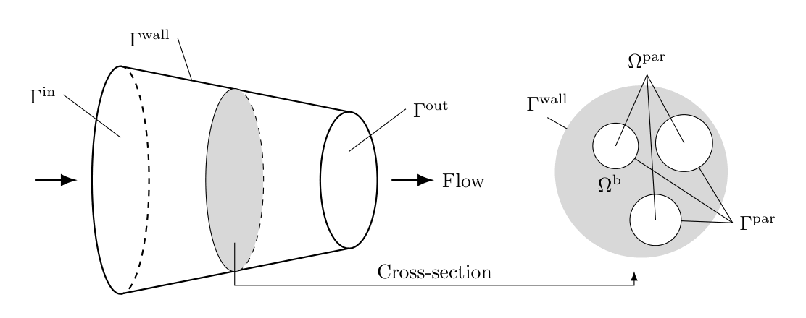

General rate model (GRM)#
The general rate model is the most comprehensive model of mass transfer in column liquid chromatography, when only the axial coordinate in the column and the radial coordinate in the beads are considered [1, 2, 3, 4].
The main assumptions are:
The cross sections of the column are homogenous in terms of interstitial volume, fluid flow, and distribution of components. Thus, only one spatial coordinate in axial direction is needed and radial transport is neglected in the column bulk volume.
The bead radii \(r_{p}\) are much smaller than the column radius \(\mathrm{P}\) and the column length \(L\). Therefore, the beads can be seen as continuously distributed inside the column (i.e., at each point there is interstitial and bead volume).
Variable |
Domain |
Description |
|---|---|---|
\(i\) |
\(\left\{ 0, \dots, N_{\text{comp}} - 1 \right\}\) |
Component index |
\(j\) |
\(\left\{ 0, \dots, N_{\text{partype}} - 1 \right\}\) |
Particle type index |
\(m_{j,i}\) |
\(\left\{ 0, \dots, N_{\text{bnd},j,i} - 1 \right\}\) |
Bound state index of \(i\)th component in \(j\)th particle type |
\(m_j\) |
\(\left\{ 0, \dots, \sum_{i=0}^{N_{\text{comp}}-1} N_{\text{bnd},j,i} - 1 \right\}\) |
Total bound state index in particle type \(j\) |
\(t\) |
\(\left[0, T_{\text{end}}\right]\) |
Time coordinate |
\(z\) |
\(\left[0, L\right]\) |
Axial coordinate |
\(r\) |
\(\left[r_{c,j}, r_{p,j}\right]\) |
Generic bead radial coordinate |
\(c^\ell_{i}(t,z)\) |
\(\left[0, T_{\text{end}}\right] \times [0, L]\) |
Interstitial concentration of the \(i\)th component |
\(c^p_{j,i}(t, z, r)\) |
\(\left[0, T_{\text{end}}\right] \times [0, L] \times \left[r_{c,j}, r_{p,j}\right]\) |
Mobile phase concentration of the \(i\)th component in the \(j\)th particle type |
\(c^s_{j,i,m_{j,i}}(t, z, r)\) |
\(\left[0, T_{\text{end}}\right] \times [0,L] \times \left[r_{c,j}, r_{p,j}\right]\) |
Solid phase concentration of the \(i\)th component’s \(m_{j,i}\)th bound state in particles of type \(j\) |
\(j_{f,j,i}(t, z)\) |
\(\left[0, T_{\text{end}}\right] \times [0, L]\) |
Flux of the \(i\)th component through stagnant film into the bead of type \(j\) |

Fig. 2 Column bulk model#
The GRM describes transport of solute molecules through the interstitial column volume by convective flow, band broadening caused by axial dispersion, mass transfer resistance through a stagnant film around the beads, pore (and surface) diffusion in the porous beads [5, 6, 7], and adsorption to the inner bead surfaces.
Consider a column of length \(L>0\) filled with spherical beads of (possibly) multiple types with radius \(r_{p,j} \ll L\) (see Fig. 2), where \(j\) is the particle type index. The mass balance in the interstitial column volume is described by
Here, \(c^\ell_i\colon \left[0, T_{\text{end}}\right] \times [0, L] \rightarrow \mathbb{R}^{\geq 0}\) denotes the concentration in the interstitial column volume, \(c^p_{j,i}\colon \left[0, T_{\text{end}}\right] \times [0, L] \times [r_{c,j}, r_{p,j}] \rightarrow \mathbb{R}^{\geq 0}\) the liquid phase concentration in the beads, \(k_{f,j,i}\geq 0\) the film diffusion coefficient, \(D_{\text{ax},i}\geq 0\) the dispersion coefficient, \(u\in\mathbb{R}\) the interstitial velocity, \(d_j > 0\) the volume fraction of particle type \(j\), and \(\frac{1}{\beta_c} = (1 - \varepsilon_c) / \varepsilon_c\) the column phase ratio, where \(\varepsilon_c\in (0,1]\) is the column porosity (ratio of interstitial volume to total column volume). If reactions are considered, the term \(f_{\text{react},i}^\ell\left(c^\ell\right)\) represents the net change of concentration \(c_i\) due to reactions involving component \(i\).
Danckwerts boundary conditions [8] are applied to inlet and outlet of the column:
Note that the outlet boundary condition Eq. 2 is also known as “do nothing” or natural outflow condition.
In the liquid phase of the porous beads (see Fig. 2) the mass balance is given by
where \(c^s_{j,i,m_{j,i}}\colon \left[0, T_{\text{end}}\right] \times [0,L] \times [r_{c,j}, r_{p,j}] \rightarrow \mathbb{R}^{\geq 0}\) denotes the solid phase concentration of the \(i\)th component’s \(m_{j,i}\)th bound state in the beads of \(j\)th type, \(D_{p,j,i}>0\) the effective diffusion coefficient in the beads, \(D_{s,j,i}\geq 0\) the surface diffusion coefficient, \(F_{\text{acc},j,i}\geq 0 \in [0,1]\) the pore accessibility factor, and \(\varepsilon_{p,j}\in (0,1]\) the particle porosity (ratio of pore volume to total bead volume). The inner bead radius \(r_{c,j} \in [0, r_{p,j})\) is assumed to be \(0\) by default, but can be positive in order to account for core-shell particles that have an impermeable core. Reaction terms in liquid and solid phase are collected in \(f_{\text{react},j,i}^p( c_j^p, c_j^s)\) and \(f_{\text{react},j,i}^s(c_j^p, c_j^s)\), respectively.
The GRM is used with both quasi-stationary (Eq. 5) and dynamic (Eq. 6) binding models.
Note that \(c^p_j\) and \(c^s_j\) denote the vector of all \(c^p_{j,i}\) and \(c^s_{j,i,m_{j,i}}\), respectively.
The boundary conditions of the bead model the film diffusion and are given for all \({t \in (0,\infty)}\) and \(z \in [0,L]\) by
By default, the following initial conditions are applied for all \(z \in [0,L]\) and \(r \in \left[r_{c,j}, r_{p,j}\right]\):

Fig. 3 Column bead model#


Fig. 4 Binding with multiple bound states#
See Table Axial Flow Column 1D and Particle Model.
Multiple particle types#
A particle type has its own set of mass transfer parameters \(\varepsilon_{p,j}\), \(D_{p,j}\), \(D_{s,j}\), etc (see Eq. 4) and its own binding model \(f_{\mathrm{ads}}\) (including a possibly differing number of bound states). This allows, for example, modeling of particle size distributions or potential applications with differently functionalized beads (e.g., immobilized enzymes).
The distribution of the particle types is governed by their volume fractions \(d_j\) in Eq. 1. The volume fractions have to sum to \(1\):
The particle type volume fractions can be spatially constant throughout the column, or depend on the position inside the column bulk volume. In the latter case, the user can specify a set of volume fractions for each discretized finite volume cell. This allows, for example, the placement of smaller particles near the frits.
Particle Geometry#
In the model above, spherical particles are considered. Other supported particle forms are cylinders and slabs. For cylinders, it is assumed that molecules can only enter through the lateral surface (i.e., the caps are sealed). Slabs are assumed to have two large sides such that molecules enter through the two large faces (i.e., the remaining four small faces are sealed).
All particle forms support core-shell beads that have an impermeable core. The particles are characterized by their (outer) “radius” \(r_{p,j}\) and their (inner) core “radius” \(r_{c,j} \in [0, r_{p,j})\). See Fig. 5.

Fig. 5 Particle geometries#
For cylinders, the factor \(3 / r_{p,j}\) in Eq. (1) changes to \(2 / r_{p,j}\) and the diffusion operator in Eq. (4) and Eq. (6) changes as
For slabs, the factor \(3 / r_{p,j}\) in (see Eq. (1)) changes to \(1 / r_{p,j}\) and the diffusion operator in Eq. (4) and Eq. (6) changes as
Size exclusion chromatography#
The general rate model can be used to simulate size exclusion chromatography (SEC) [2]. The particle porosity \(\varepsilon_{p,j}\) on the mobile phase side of the transport equations is replaced by a component-dependent accessible porosity
where the pore accessibility factor \(F_{\text{acc},j,i}\) ranges in \((0, 1]\).
Small molecules that can enter any pore have \(F_{\text{acc},j,i} = 1\), whereas larger molecules that can enter some, but not small pores, have values \(0 < F_{\text{acc},j,i} < 1\). The other extreme is given by molecules so large that they cannot enter any pore and, consequently, \(F_{\text{acc},j,i} = 0\). Note that \(F_{\text{acc},j,i} = 0\) is not allowed in a simulation, which can be circumvented by setting \(k_{f,j,i} = 0\).
By default, \(F_{\text{acc},j,i} = 1\) for all components \(i\) and all particle types \(j\), which disables size exclusion chromatography.
Note that the solid phase weighting \(\left(1 - \varepsilon_{p,j}\right) / \left(F_{\text{acc},j,i} \varepsilon_{p,j}\right)\) in Eq. 4 retains the full solid volume fraction \(1 - \varepsilon_{p,j}\), that is, the accessible porosity replaces \(\varepsilon_{p,j}\) in the pore liquid transport and reaction terms only. The pore accessibility factor can hence only be combined with a binding model, if the binding capacities remain well-defined. Physically, a solute that reaches only part of the pore space will also reach only part of the immobilized ligands, so its saturation capacity (e.g., \(q_{\text{max}}\) of Langmuir-type binding models) is reduced accordingly. As long as the affected components do not compete for the same bound states, this reduction is simply expressed in the respective component’s own capacity parameter. If, however, components with different accessible porosities compete for one shared population of binding sites (e.g., multi component Langmuir binding, whose saturation term is shared by all components), no single set of capacity parameters can represent their different accessible ligand fractions consistently. Binding models should therefore only be combined with the pore accessibility factor if this case is excluded. In order to simulate pure SEC, binding is disabled by setting \(N_{\text{bnd},i} = 0\) for all components \(i\) and applying no binding model.
Note that multiple particle types can also be used to aid in modeling size exclusion effects, see Section Multiple particle types.
Specification of flow rate / velocity and direction#
Since volumetric flow rates are specified for each network connection, the unit operation always infers its interstitial velocity via
where \(F_{\text{in}}\) denotes the volumetric flow rate and \(A\) the cross section area. Note that without the bulk porosity \(\varepsilon_c\), the superficial velocity would be obtained.
The direction of flow inside the unit operation is governed by the field FORWARD_FLOW, whose default (\(1\)) means flow from the larger towards the smaller radius for the radial flow and frustum geometries.
Note that in case of reversed flow, the chromatogram is returned at the unit operation’s INLET, which may not be returned from simulation by default.
For information on model parameters see Axial Flow Column 1D and Particle Model.
Column Geometry#
In the model above, a cylindrical axial flow column is considered, see figure Fig. 6. Other geometries are being used, and CADET-Core additionally supports cylindrical radial flow columns, frustum columns, and columns whose cross section area varies smoothly along the flow path and is prescribed by the user.

Fig. 6 Axial flow cylindrical column geometry#
Radial flow GRM#
The radial flow GRM describes transport of solute molecules through the interstitial column volume by radial convective flow, band broadening caused by radial dispersion, mass transfer resistance through a stagnant film around the beads, pore (and surface) diffusion in the porous beads [5, 6, 7], and adsorption to the inner bead surfaces. Figure Fig. 7 shows the geometry of the radial flow column.

Fig. 7 Radial flow cylindrical column geometry#
The main assumptions are:
The cylindrical shells of the column are homogenous in terms of interstitial volume, fluid flow, and distribution of components. Thus, only one spatial coordinate in radial direction \(\rho\) is needed and axial transport is neglected in the column bulk volume.
The bead radii \(r_{p}\) are much smaller than the column radius \(\mathrm{P}-\mathrm{P}_c\), with \(\mathrm{P}\) and \(\mathrm{P}_c\) being the inner and outer column radius respectively, and the column length \(L\). Therefore, the beads can be seen as continuously distributed inside the column (i.e., at each point there is interstitial and bead volume).
The fluids are incompressible, i.e. the velocity field \(\mathrm{V} \colon \mathbb{R}^3 \to \mathbb{R}^3\) submits to \(\operatorname{div}\left( \mathrm{V} \right) \equiv 0\). That is, the volumetric flow rate at the inner and outer column radius are the same.
Consider a hollow (double walled) column with inner column diameter \(\mathrm{P}_c>0\) and outer diameter \(\mathrm{P}>\mathrm{P}_c\), filled with spherical beads of (possibly) multiple types with radius \(r_{p,j} \ll L\) (see Fig. 2), where \(j\) is the particle type index. Alternatively, consider a wedge of this cylinder. The mass balance in the interstitial column volume is described by
Here, \(c^\ell_i\colon \left[0, T_{\text{end}}\right] \times [\mathrm{P}_c, \mathrm{P}] \rightarrow \mathbb{R}^{\geq 0}\) denotes the concentration in the interstitial column volume, \(c^p_{j,i}\colon \left[0, T_{\text{end}}\right] \times [P_c, P] \times [r_{c,j}, r_{p,j}] \rightarrow \mathbb{R}^{\geq 0}\) the liquid phase concentration in the beads, \(k_{f,j,i}\geq 0\) the film diffusion coefficient, \(D_{\text{rad},i}\geq 0\) the dispersion coefficient, \(u>0\) the interstitial velocity, \(d_j>0\) the volume fraction of particle type \(j\), and \(\beta_c = \varepsilon_c / (1 - \varepsilon_c)\) the column phase ratio, where \(\varepsilon_c\in(0,1)\) is the column porosity (ratio of interstitial volume to total column volume). If reactions are considered, the term \(f_{\text{react},i}^\ell\left(c^\ell\right)\) represents the net change of concentration \(c_i\) due to reactions involving component \(i\).
Danckwerts boundary conditions [8] are applied to inlet and outlet of the column:
Under the default flow direction (FORWARD_FLOW \(= 1\)) the fluid enters at the outer radius \(\mathrm{P}\) and leaves at the inner radius \(\mathrm{P}_c\), so the inlet condition Eq. 11 is imposed at \(\mathrm{P}\) and the outlet condition Eq. 12 at \(\mathrm{P}_c\); setting FORWARD_FLOW \(= 0\) swaps the two boundaries.
Note that the radial coordinate \(\rho\), and with it the ordering of the bulk solution, always runs from the inner to the outer radius, i.e. it is oriented against the default flow direction.
Note further that the outlet boundary condition Eq. 12 is also known as “do nothing” or natural outflow condition.
The complementing mass transport and binding equations for the liquid and solid phases of the porous beads are described by the same equations as for the axial GRM.
For information on model parameters see Radial Flow Column 1D and Particle Model.
Frustum device GRM#
The frustum GRM describes transport of solute molecules through the interstitial column volume by convective flow from the larger to the smaller radius of the frustum device (“axial” direction), band broadening caused by dispersion, mass transfer resistance through a stagnant film around the beads, pore (and surface) diffusion in the porous beads [5, 6, 7], and adsorption to the inner bead surfaces. Figure Fig. 8 shows the geometry of the frustum column.

Fig. 8 Frustum column geometry#
The main assumptions are:
The frustum shells of the column are homogenous in terms of interstitial volume, fluid flow, and distribution of components. Thus, only one spatial coordinate in axial direction \(x\) is needed.
The bead radii \(r_{p}\) are much smaller than the column length \(H\) and radius \(r(x) \forall x\in(0,H)\). Therefore, the beads can be seen as continuously distributed inside the column (i.e., at each point there is interstitial and bead volume).
The fluids are incompressible, i.e. the velocity field \(\mathrm{V} \colon \mathbb{R}^3 \to \mathbb{R}^3\) submits to \(\operatorname{div}\left( \mathrm{V} \right) \equiv 0\). That is, the volumetric flow rate at the inner and outer column radius are the same.
A cross-sectional average \(\overline{u}(x) := \int_A \vec{u} dA\) of the velocity is considered. This is a necessary assumption to derive the one-dimensionalized model.
We consider axial flow through a conical frustum, where the axial coordinate from bottom to top is denoted by \(x \in (0, H)\). The frustum is filled with spherical beads of (possibly) multiple types with radius \(r_{p,j} \ll H\) (see Fig. 2), where \(j\) is the particle type index.
The flow-directional cross-section area is circular and varies with axial position \(A(x) = \pi r(x)^2\), with \(r(x) = r_0 + \frac{x}{H} (r_H - r_0)\) being the frustum radius at axial position \(x\), and \(r_H, r_0\) being the radii at the frustum top and bottom, respectively.
The averaged bulk velocity at position \(x\) is then given by \(\overline{u}(x) = \frac{Q}{A(x)} = \frac{Q}{\pi r(x)^2}\).
We define the velocity coefficient \(u := \frac{Q}{\pi}\), which has units of \(\mathrm{m}^3/\mathrm{s}\), and expresses the scaled volumetric flow rate.
The mass balance in the interstitial column volume is described by
Here, \(c^\ell_i\colon \left[0, T_{\text{end}}\right] \times (0, H) \rightarrow \mathbb{R}^{\geq 0}\) denotes the concentration in the interstitial column volume, \(c^p_{j,i}\colon \left[0, T_{\text{end}}\right] \times (0, H) \times (r_{c,j}, r_{p,j}) \rightarrow \mathbb{R}^{\geq 0}\) the liquid phase concentration in the beads, \(k_{f,j,i}\geq 0\) the film diffusion coefficient, \(D_{i}\geq 0\) the dispersion coefficient, \(u>0\) the interstitial velocity coefficient, \(d_j>0\) the volume fraction of particle type \(j\), and \(\beta_c = \varepsilon_c / (1 - \varepsilon_c)\) the column phase ratio, where \(\varepsilon_c\in(0,1)\) is the column porosity (ratio of interstitial volume to total column volume). If reactions are considered, the term \(f_{\text{react},i}^\ell\left(c^\ell\right)\) represents the net change of concentration \(c_i\) due to reactions involving component \(i\).
Danckwerts boundary conditions [8] are applied to inlet and outlet of the column:
Under the default flow direction (FORWARD_FLOW \(= 1\)) the fluid enters at the large end \(x = 0\) and leaves at the small end \(x = H\); setting FORWARD_FLOW \(= 0\) swaps the two boundaries.
Note that the outlet boundary condition Eq. 15 is also known as “do nothing” or natural outflow condition.
The complementing mass transport and binding equations for the liquid and solid phases of the porous beads are described by the same equations as for the axial GRM.
For information on model parameters see Frustum Flow Column 1D and Particle Model.
Smoothly varying cross section GRM#
The radial flow and frustum geometries both prescribe the cross section area \(A(x)\) through a small number of geometric parameters, namely the end radii and, for the radial flow column, the cylinder height. The smoothly varying cross section GRM instead lets the user prescribe \(A(x)\) directly, which covers columns and devices whose shape is neither a cylinder shell nor a frustum.
We consider axial flow along the coordinate \(x \in (0, H)\), with a cross section area \(A \colon [0, H] \to \mathbb{R}^{>0}\) that is smooth and strictly positive, and a constant volumetric flow rate \(Q\). The averaged bulk velocity at position \(x\) is then \(\overline{u}(x) = \frac{Q}{A(x)}\), and the mass balance in the interstitial column volume reads
Danckwerts boundary conditions are applied as before, with \(A(0)\) in place of \(r(0)^2\) in Eq. 14.
Under the default flow direction (FORWARD_FLOW \(= 1\)) the fluid enters at \(x = 0\) and leaves at \(x = H\).
The area is supplied as the field CROSS_SECTIONAL_AREA_AT_NODES, i.e. by its values at the nodes of the DG discretization, and is represented within the scheme by the nodal Lagrange interpolant of those values on each element.
The area therefore lives in the same polynomial space as the solution, and the integrals weighted by \(A\) (and by \(A D\)) that the discretization requires are evaluated by Gauss quadrature that is exact for the resulting integrands.
For a smooth area profile, the interpolation error is of the same order as the discretization error of the scheme itself, so this representation does not reduce the order of convergence.
Since the representation is tied to the DG grid, this geometry is only available for the DG spatial discretization, and the field has to be recomputed whenever the discretization is refined.
For information on model parameters see Smoothly Varying Cross Section Column 1D and Particle Model.